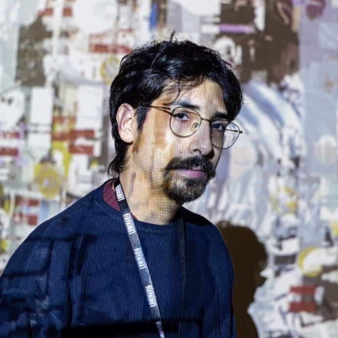

Juan is a creative programmer and visual artist based in San Antonio, TX.
He is an enthusiast for creating large scale and immersive interactive projects with cheap and accessible tools that anyone can use and learn. He has experience in physical computing with micro controllers as well as hacking and repurposing found electronics. He aims to continue investigating ways to create and teach generative and algorithmic design to create projects that take a life of their own.